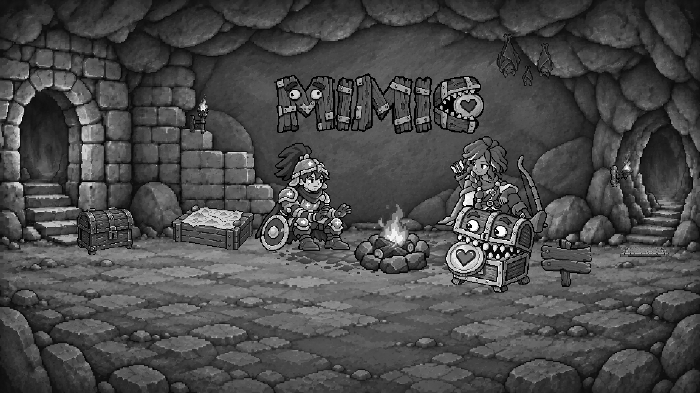
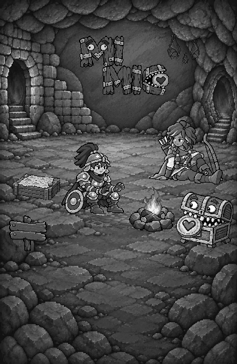
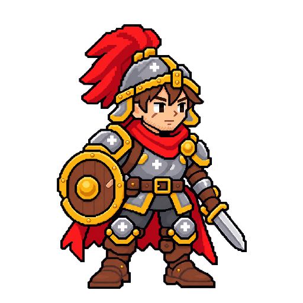
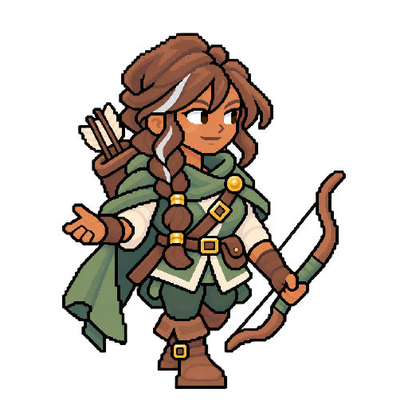

Landing — 已套用標題位置
awaiting-calibration · reviewOnly: true · runtimePromotion: false
桌機單行：左上 376／100，尺寸 288×84；手機 MI／MIC：左上 130／59，尺寸 148×98。兩個版本各用自己的場景座標。
本頁彩色與灰階 PNG 已套入指定位置。只改標題落點，大小、亮度、像素、背景、人物與道具不變；本輪仍待視覺確認，不代表 Scenes 核准。
原定位工具與舊稿（保留原始座標） · 本版 manifest / exact hashes · 你貼回的兩份定位 JSON
桌機：單行 MIMIC
字標 288 × 84 logical px；左上 376, 100；輸出 1920 × 1080。
手機：共用交錯兩行版
字標 148 × 98 logical px；左上 130, 59；輸出 390 × 600。
兩張真實灰階輸出


既有字標參照與新來源
下圖為未套用共同色調的來源；場景使用同一 brightness 0.82／saturation 0.72 整理，沒有 CSS 個別亮度差異。
新交錯透明 ImageGen source · 實際 prompt

已核准身份與顆粒參照


等待本輪視覺確認
請確認桌機單行與手機兩行標題落點。這是 review-only 套用版本；原稿及所有來源都保留。沒有帳務、Home、產品頁面或 runtime 變更，沒有自動核准或 production export。
exact SHA-256 與實際尺寸
| base | 1db896df38f84872ab5396d701acdee7edc84b6d58ba90c5ae8398cc66415ac3 |
| lineage | 8e99f68035b67d92340a7247e909791458a14129090eac5a6a08bc9efd6e60cc |
| prompt | 22b381ea2c5e46be305d585353e02a109c2b2014b486aaac936e226fbeee32d7 |
| single source 256 × 75 | 5a1cfc2a7d96c15a467c8fa2f3c869d23a3811a096edd121a76a9f952b59760c |
| single master 256 × 75 | 40292ed6c2d12383b4eaf255e5023b21bc0ab716eda1044acc17a1a90448cec7 |
| staggered source 1536 × 1024 | bf6a6596dd8f978e4a34b751f49ef3687d2eb74a94ea57d8fe5f40e715ae3f90 |
| staggered master 256 × 170 | c992e21f8b8821ec508cb6998ed940a078ac18c3df7abd161c543bb99ce002ca |
| desktop-single logical 960 × 540 | 08dca5cb9f13c0a4ede1322f4e8f93295cae7b39a36438509a1286f12f87643f |
| desktop-single color 1920 × 1080 | 3208e934a247796a438f029458a4e82fe1a229dd8c8c5208d8a8a903c60923c4 |
| desktop-single gray 1920 × 1080 | 60461e78796adb24ca9fe64d1981447cfd280d8537dbddab2200bfd07e344093 |
| desktop-single title 288 × 84 | 4ecc5bc6788f34854aac81a54d35b85fad9648c9f9d6499200f825246976ff31 |
| desktop-staggered logical 960 × 540 | 37b13aad4fd0148592f51e681c879deeeef37f6e1c9f78f677ea38d08e52e9fb |
| desktop-staggered color 1920 × 1080 | c510c247b7c1642d646f5cd1528268ddab06967cd0ab0dc61a313fd7edabd446 |
| desktop-staggered gray 1920 × 1080 | 4da2414b16a3044676fb5d9e45c390282efc69960d861268f919015a296aec1f |
| desktop-staggered title 157 × 104 | 1897d9b9fb2345a5cb890333f5e76fb7cfda9df59f5d3f3a5cf98ba0978b5dee |
| phone-staggered logical 390 × 600 | dae2872edddfa14d68b37c7b5475c4680381db0826dc417cb8a07ee370385ecf |
| phone-staggered color 390 × 600 | dae2872edddfa14d68b37c7b5475c4680381db0826dc417cb8a07ee370385ecf |
| phone-staggered gray 390 × 600 | 317ad09e18904b7bca29496418a59a0aa5f9c72f611c4d23c83661fbe536c2ac |
| phone-staggered title 148 × 98 | 8fd7d677df46cc77478518de2a9f68ff77b8ae4d28deb25e6b11ad5ba6ee8f1c |